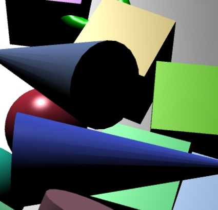

Ivan Martinez-Arias / ivalmart@ucsc.edu
Alan Chen / alrichen@ucsc.edu
Date: June 6, 2021

An AR Sandbox experience through Android devices where users are able to create a small virtual world through their phone's camera and are able to create objects that have a physics engine. Created through BabylonJS, WEbXR and ARCore, users are given a program to manipulate cones, cylinders, cubes, and spheres. The world created contains objects with lighting and shadows, a reticle used as a cursor for the user to know where objects and effects take place, and a physics engine from BabylonJS to allow interactivity through created effects upon the objects in the world.
Android Google Play
Android China
Program / Driver
Program / GitHub Pages
README
Babylon JS UI with DOM
Babylon JS Intro to WebXR
Babylon JS WebXR AR Features
Babylon JS Physics
Babylon JS Coordinate Transformation
Babylon JS Physics Engine
Babylon JS Example of Physics Effects
Sammy the Slug Photo
The program MUST be running on a live host in order for it to function. There are two
sources in which users can try out the AR program.
1. GitHub Pages - Users must access the
GitHub Pages link through an Android device
in order to get the AR Experience.
2. Apache Tomcat - Users are able to download the project folder in order to port
forward the website to their Android device. Steps to download and run the program are as follows:
- Download Apache Tomcat by going to the link and
clicking on “32-bit/64-bit Windows Service Installer” on your PC
- Install Apache Tomcat and find it through Program Files (x86)
- Go into Apache Software Foundation -> Tomcat 10.0 -> webapps -> ROOT
- Place the project folder into the ROOT folder
- Start the Apache Tomcat program
- Enable Developer Mode on the Android device and enable “USB Debugging”
- Open up Google Chrome on your PC and paste the following into a browser: chrome://inspect/#devices
- Verify if Port Forwarding is enabled and active
- Plug in Android device into PC and open up Google Chrome on the Android device
Note: To view the perspective of the phone on your PC, go to step (g) for the link and under the “Remote
Target” title is where the Android device is. Click on “Inspect”
- Paste in the following on Google Chrome in the Port Forwarding page textbox:
http://localhost:8080/ASG_5_BabylonJS/index.html
Once the program is up and running on an Android device, the user will see a colored background with buttons on each side providing different functionalities. To enter into AR Mode, tap on the bottom right icon .
The program has a physics engine depending on the orientation the program entered AR Mode. Objects can move around
the world with collision given by the user. There are also two buttons that interact with the objects given force.
Note: If the user does not create a ground object into the world, the object will fall out of the world and
will disappear.
After the world has been generated, a green donut-shaped reticle will appear in the middle of the user's device. It acts as a cursor for the user to place down objects into the world, as well as interact with objects.
Adding Objects:There are 5 buttons the user can use to create objects. The objects the user can create are: Balls/Spheres, Cubes, Cylinders, Cones, and Slug. When pressed, it drops down the selected object where the cursor is with a random color given onto the world. The "Place Slug" button instead drops down a cube of an image of Sammy the Slug.
Adding Ground:There is a button "Create Ground" that creates a floor for the user to place down objects on. Depending on where the cursor is will create the ground.
Generating an Explosion/Tornado:
Two buttons "Create Explosion" and "Create Tornado" will generate physics in regards to the button created. Explosions
scatter the objects in respect to where the reticle is. Tornados will cause a swirl of objects in respect to the reticle.
Note: The tornado is very weak in terms of power when pressed. To generate a stronger tornado effect, user can tap
the button multiple times.
When the "Reset Scene" button is pressed, it will remove all objects of the world to reset the scene to when the program was first opened.
- AR Mode on thr program will not work on PC/Desktop unless there is AR support or an AR emulator.
- When opening the program and going into Landscape Mode on the device before activating AR Mode, the
buttons will overlap each other and appear very large. The buttons will scale to the screen correctly
once the user enters AR Mode.
- Depending on when AR mode is activated in respect to Landscape Mode or Portrait Mode, the physics will
only be oriented to when the scene was first created. Example: If the user starts the program on portrait mode
and re-enters the program in landscape mode, the physics is bound to portrait mode and objects will fall sideways.
- Buttons will seem streteched or squished when the user enters and exits out of AR mode multiple times.
Refreshing the page will fix the issue.
Our experience of learning how to use AR was a bumpy ride. The minimal resources and documentations that we found were beneficial for
the most part and it is what helped us get a footing into the project. There were very few resources and documented APIs
because most of the programs we were working with either had no support between each other and were
a new and ongoing systems that were in development and not fully completed in terms of funtionality.
We researched the programs we were originally going to use and realized how little documentation there was. Throughout our experience,
we had to reduce the scope of our project from what we envisioned. Another factor is programs not being compatible with one another,
thus having to adapt our project and visions to something else that provided us those resources. It made us realize that when approaching
a new language/program, there might be no one to explain to us how things work efficiently and we would have to learn it ourselves.
Since AR is still developing technology, there aren't many external resources such as books to understand more how to utilize AR programs.